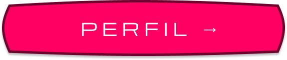
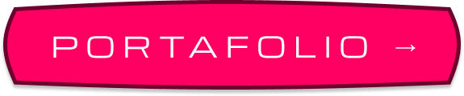

DARYN ART
"Donde las ideas toman forma."
QUIÉNES SOMOS
Daryn Art es un estudio creativo enfocado en el desarrollo de contenido visual digital. Su trabajo se centra principalmente en modelado 3D, ilustración digital y edición audiovisual, combinando herramientas tecnológicas con un enfoque artístico. El estudio se distingue por su atención al detalle, la búsqueda constante de calidad visual y la capacidad de adaptar cada proyecto a diferentes necesidades creativas. Cada pieza desarrollada busca no solo cumplir una función visual, sino también transmitir ideas, conceptos y emociones a través del arte digital.
CONÓCE AL
DISEÑADOR

CONÓCE MIS
TRABAJOS

CONÓCENOS
MISIÓN
Crear contenido visual de alta calidad mediante modelado 3D, ilustración y edición audiovisual, transformando ideas en experiencias visuales innovadoras. En Daryn Art se busca combinar creatividad, técnica y atención al detalle para desarrollar proyectos que comuniquen conceptos de forma estética, clara y memorable.

VISIÓN
Convertirse en un estudio creativo reconocido por su innovación visual y excelencia artística, destacando en la creación de contenido digital que inspire, comunique y aporte valor a proyectos artísticos, educativos y profesionales.

NUESTROS VALORES
CREATIVIDAD
Explorar constantemente nuevas formas, estilos y ideas de expresión visual.
CALIDAD
Cuidar cada detalle del proceso creativo para entregar resultados profesionales.
INNOVACIÓN
Integrar nuevas herramientas y tendencias en el arte digital.
COMPROMISO
Trabajar con responsabilidad y dedicación en cada proyecto.
PASIÓN POR EL ARTE
Motivación constante por crear, aprender y mejorar.